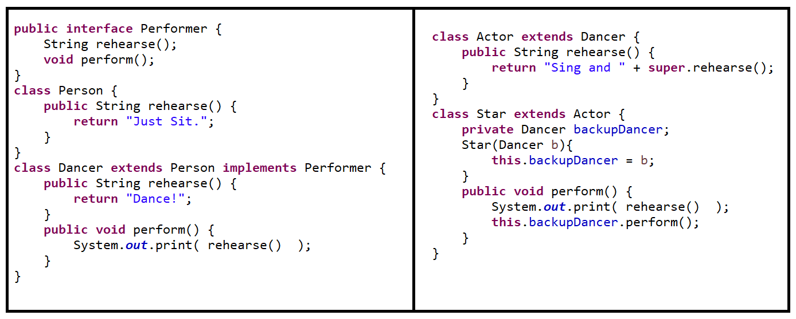

Polymorphism Reference (Worksheet 15 Walk Through Solutions)

New Questions
For each line below, first ask yourself:
- Compile-time: Does the reference type declare (or allow) that cast or method?
- Run-time: If it compiles, what actual object is involved? Does dynamic dispatch pick an override, or do you get
ClassCastException?
| Code | Result | Detail |
|---|---|---|
|
G |
|
|
Runtime Error |
|
|
Compile Error |
|
|
No Output |
|
|
Compile Error |
|
|
DE |
|
How to Walk Through
- Reference vs. Implementation:
At compile-time, look only at the *reference* type (e.g.Top,One, orTwo) to see if the cast or method call is allowed. - Actual Object:
At run-time, see what the variable actually points to (e.g.new One()vs.new Two()). - If you downcast, Java checks the real type and throwsClassCastExceptionon mismatch. - If you call a method, Java performs dynamic dispatch and invokes the most specific override in the class hierarchy. - Interface Instantiation:
You cannot instantiate an interface or abstract class—attempting to do so is a compile-time error.
New Problem Casting

Person a = new Actor();
Dancer d = new Dancer();
Performer s = new Star(d);
| Code | Result | Detail |
|---|---|---|
|
No output |
|
|
Compile-time error |
|
|
Sing and Dance! |
|
|
Runtime-error |
|
|
Dance! |
|
|
Sing and Dance!Dance! |
|
|
Compile-time error |
|
Note: Casting vs. Dynamic Dispatch
When you write ((Dancer)a).perform();, the cast to Dancer is only a compile-time mechanism to allow calling perform(). At runtime the JVM still sees the actual object as an Actor:
-
First dispatch: JVM looks for
perform()onActor→ not found → falls back toDancer.perform(). -
Nested dispatch: Inside
Dancer.perform()there is a call torehearse(), so the JVM again starts atActor, findsActor.rehearse(), and executes that override.
Key point: Casting affects only the compile-time check; dynamic dispatch always uses the object’s real (runtime) class to select method implementations.